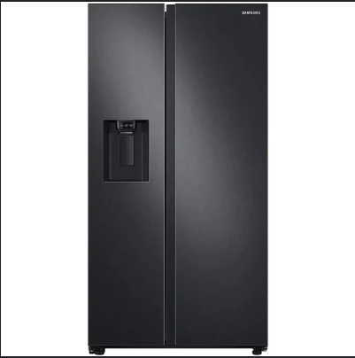

ℹ️ Información General:
- Marca del equipo: Samsung RT38K5930S8
- Fecha del reporte: 29 de septiembre de 2024
- Número de serie: 12345SAMSUNG7890
- Ubicación del equipo: Cocina principal, Casa en Calle Las Flores #15
ℹ️ Detalles del fallo:
- Descripción del problema: La nevera no enfría correctamente en la sección del refrigerador, mientras que el congelador parece funcionar normalmente. Se ha notado acumulación de escarcha en el evaporador.
- Fecha de aparición del fallo: 25 de septiembre de 2024
- Duración del fallo: 4 días
- Frecuencia: Constante
ℹ️ Acciones realizadas:
- Se descongeló el evaporador manualmente para eliminar la acumulación de escarcha.
- Se limpió el serpentín.
- Se revisaron los conductos de ventilación para asegurar que no estuvieran bloqueados.
ℹ️ Información del técnico:
- Nombre del técnico: Juan Pérez
- Número de contacto: +52 55 1234 5678
ℹ️ Inspección y Diagnóstico Inicial:
- Temperatura interna: Se midió 15°C en la sección del refrigerador (normal) y -18°C en el congelador (normal).
- Estado del compresor: Funcionando con normalidad, sin ruidos extraños, pero funciona por largos periodos sin apagarse.
- Estado del ventilador interno: No está funcionando adecuadamente en la sección del refrigerador; parece estar bloqueado o inoperativo.
- Revisión de las juntas de la puerta: Las juntas de la puerta están en buen estado; no se detectan fugas de aire.
- Estado del termostato: El termostato parece operativo, ya que los ajustes de temperatura responden, pero el refrigerador no enfría como se espera.
- Nivel de refrigerante (si aplica): No se puede determinar con precisión sin herramientas adicionales, pero el congelador parece mantener el nivel adecuado, lo que sugiere que no hay fuga de refrigerante.
ℹ️ Recomendaciones y pasos siguientes:
- Posible reemplazo del ventilador interno para restaurar el flujo de aire adecuado en la sección del refrigerador.
- Revisar el sistema de descongelación automático, ya que podría estar fallando y causando la acumulación de escarcha.
- Agendar una inspección adicional para revisar el nivel de refrigerante si el problema persiste.
- Fecha de la próxima inspección: 5 de octubre de 2024